Chapitre 2 · 21 octobre – 2 novembre 2011
Le tour du Dhaulagiri
Dix jours sans guide ni porteur, des rizières de la Myagdi au French Pass
Le 20 octobre, nous sommes redescendus de l'Everest avec deux jours d'avance. Nous y avons vu les plus hautes montagnes du monde, mais depuis des sentiers battus et rebattus. Il nous reste un peu plus d'un mois, et une envie précise. À l'ouest de Pokhara, un itinéraire fait le tour d'un géant de 8 167 mètres, le Dhaulagiri : des villages où ne passe presque aucun touriste, un glacier, deux cols à plus de 5 000 mètres. On nous le déconseille de toutes parts. Nous partons à deux, sans guide ni porteur, avec une tente, une carte fausse et quelques kilos de tsampa.
Katmandou21 octobre 2011
La liste des obstacles
Katmandou : l'agence, une boutique de trek
- nuit à l'hôtel, Katmandou
Le 21 octobre, nous nous réveillons à Katmandou. Hier soir, après trois heures dans un cybercafé, nous sommes revenus à une idée abandonnée à Namche : le tour du Dhaulagiri. Aujourd'hui, il faut voir si elle tient debout. Au lever, une souris traverse la chambre : elle a repéré notre morceau de fromage de yak.
Nous dressons la liste de tout ce qu'il faut régler avant de partir : les permis, le bus pour Pokhara, la nourriture, le nombre d'étapes, la météo, la difficulté, le matériel, la carte, et la question qui les contient toutes, celle de la faisabilité. Au petit déjeuner, à l'hôtel, nous faisons la connaissance de Raphaële, une voyageuse aux allures de hippie, sur la route depuis plus d'un an.
Puis l'agence de l'Everest : nous y voyons Krishna, écrivons la lettre de recommandation et récupérons une tente et des tapis de sol. Le déjeuner avec Raphaële enchaîne noodles, momos, donuts et beignets, pour moins d'un euro chacun. Un passage sur internet, un retour à l'agence, puis Dependra, notre guide de l'Everest, nous emmène dans une boutique de trek (trekking shop). Grâce à lui, nous en sortons avec des guêtres à 4 euros, de petits crampons à 8 euros et des draps de soie à 3 euros.
Le soir, nous dînons tous les trois. On parle du Dhaulagiri, puis d'affaires. La soirée finit à l'agence, une bière à la main, avec Krishna, qui nous annonce que le tour ne peut pas se faire légalement en individuel : un poste de contrôle (check point) attend les marcheurs juste avant le camp des Italiens. Un guide ajoute qu'il neige sur le French Pass.
La liste des obstacles s'allonge. Raisonnablement, il faudrait rester à Katmandou, ou payer un guide et des porteurs. Le trek est ici très réglementé : sans agence, seuls le tour des Annapurnas, le Langtang et le camp de base de l'Everest nous sont ouverts, c'est-à-dire les itinéraires du tourisme de masse. Je garde pourtant le sentiment que le tour reste faisable, si la météo le permet. C'est notre seule chance de voir le Népal loin des transports pour touristes, et c'est devenu le cœur du voyage : il faut y aller.
Demain, nous finirons les préparatifs, et nous tenterons à tout prix d'avancer notre dîner avec Isabelle et Christian, nos compagnons suisses de l'Everest, pour pouvoir partir le surlendemain matin. Nous dormons à l'hôtel, à Katmandou.
Katmandou22 octobre 2011
Quatorze étapes à la main
Katmandou : vivres, Thamel, l'hôtel Shanker, la Dolce Vita
- dîner avec Isabelle et Christian · lever prévu 5 h 45
- nuit à l'hôtel, Katmandou
Le 22, la journée commence par les vivres : de quoi déjeuner, dîner et petit-déjeuner pendant tout le trek. Le calcul n'a rien de simple. Il faut compter avec le poids, le nombre de repas, les chances de manger chez l'habitant, et le mode de cuisson, dont dépend le nombre de cartouches de gaz. Sur une page du carnet, le menu tient en quelques mots : riz et lentilles, viande séchée et crevettes pour midi et soir, porridge sucré le matin, barres de céréales et fruits en extra. Une autre liste, celle des courses : pantalon, guêtres, crampons, popote, trois petites cartouches de gaz, draps de soie, ficelle, couverture de survie.
Ensuite, Thamel pour le matériel qui manque, un déjeuner du côté de Freak Street, puis l'hôtel Shanker, au nord de Thamel, où logent Isabelle et Christian, pour leur demander d'avancer le dîner. Ils sont sortis ; nous leur laissons un message.
Sur le chemin du retour, un cybercafé : Romain a rendez-vous sur Skype avec Élise, sa petite amie. Nous faisons tout à pied. À 16 heures, un thé à Freak Street, puis encore internet, pour recopier ce qu'un site, blankpage.fr, dit du tour : six étapes chacun, à la main. Le plan compte quatorze étapes, de Beni à Jomsom, journées d'acclimatation comprises.
Aussitôt après, nous repartons vers l'hôtel Shanker par Thamel, où je récupère des photos tirées au format carte postale, pour écrire à nos proches, et achète une popote. Nous arrivons avec vingt minutes de retard. Avec Isabelle et Christian, le lien se renoue aussitôt ; ils sont d'une gentillesse et d'une générosité rares.
Nous allons à pied jusqu'à la Dolce Vita, un restaurant italien de Thamel, dans le noir et la circulation. Romain et moi sommes à bout, mais à peine la porte passée, la force et l'envie reviennent. Le dîner est une réussite. Chacun dit ce qu'il pense. On parle de l'Everest, de nos guides, de nos impressions, du Dhaulagiri que nous préparons, de nos pays, de vacances passées. Le vin est bon, l'ambiance légère. Fantastique. En les quittant, nous leur promettons un compte rendu détaillé du tour, photos à l'appui.
À l'hôtel, il reste les sacs à faire, et l'ampoule de la chambre choisit ce moment pour griller : nous finissons à la frontale. Je suis vidé, et heureux. Demain, lever à 5 h 45 pour le bus de 6 h 30. C'est notre dernière nuit à Katmandou avant près d'un mois.
Pokhara23 octobre 2011
Ceux qui secouent la tête
Katmandou → Pokhara en bus
- bus de 6 h 30 · arrivée en milieu d'après-midi
- nuit à Pokhara, une chambre double pour trois
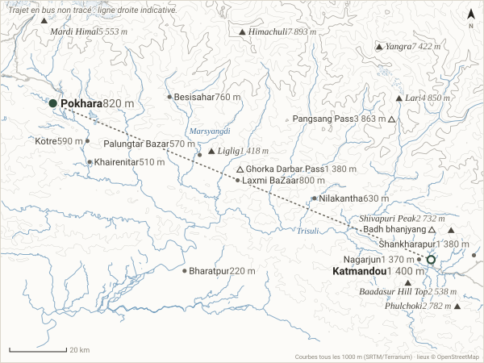
Le 23, le bus de 6 h 30 quitte Katmandou pour Pokhara. Au deuxième arrêt, surprise : Peter et Louise, le couple danois de l'Everest, sont là. Quelle joie.
Dans le bus, je commence Surmonter les émotions destructrices. Ce que j'y lis rejoint exactement ce que je vis. Malgré son poids, il viendra avec moi. Le livre rapporte un dialogue entre le dalaï-lama et des scientifiques, recueilli par le psychologue Daniel Goleman.
Nous arrivons en milieu d'après-midi et partons chercher un hôtel. Nous y retrouvons Elizabeth, une voyageuse, en quête elle aussi ; nous finissons par partager à trois une chambre double. C'est moins cher. Les bureaux des permis TIMS et ACAP sont fermés : ce sera pour demain matin.
Chaque fois que nous annonçons Beni et le tour du Dhaulagiri, c'est la même tête choquée, la même mise en garde : il neige beaucoup là-haut, paraît-il, en ce moment.
Pokhara, elle, est une ville au bord d'un lac, avec une grande rue qui longe l'eau. On ne se croit plus à Katmandou, plutôt dans une station balnéaire. Le lac Phewa est le troisième du Népal ; sa rive nord est devenue le quartier des voyageurs, que tout le monde appelle Lakeside.
Je suis épuisé. Romain, très chic, dort par terre. Demain, les permis, puis le bus pour Beni.
Jour 024 octobre 2011
La route s'en va
Pokhara → Beni en bus
- bus de 13 h · 5 h de route
- nuit à l'hôtel, Beni · 250 Rps
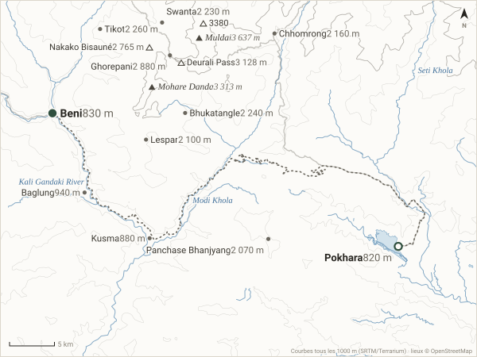
Le 24, réveil tardif à Pokhara, à 8 heures. C'est la deuxième journée de route vers le départ du trek, Beni. Après un petit déjeuner dont nous négocions le prix, nous passons aux bureaux des permis : la carte TIMS et le permis ACAP. La carte TIMS enregistre les marcheurs ; le permis ACAP ouvre l'aire de conservation des Annapurnas, la plus vaste zone protégée du Népal, plus de 7 600 kilomètres carrés.
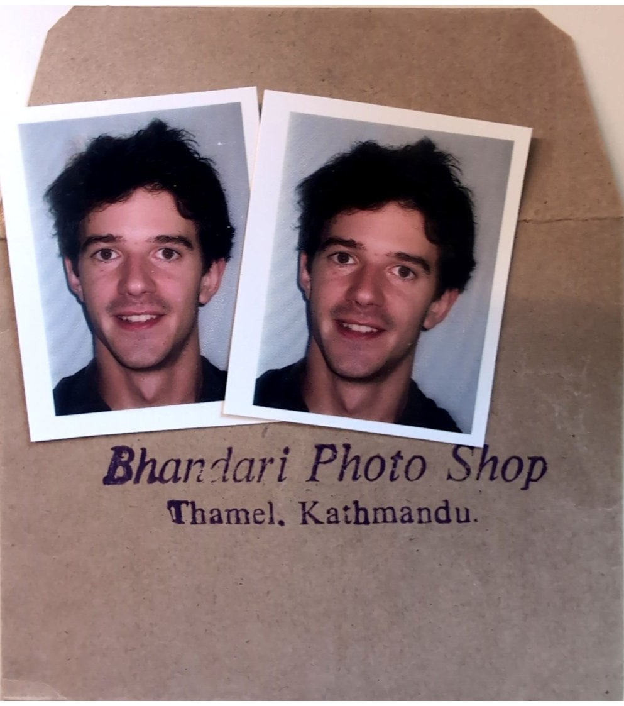
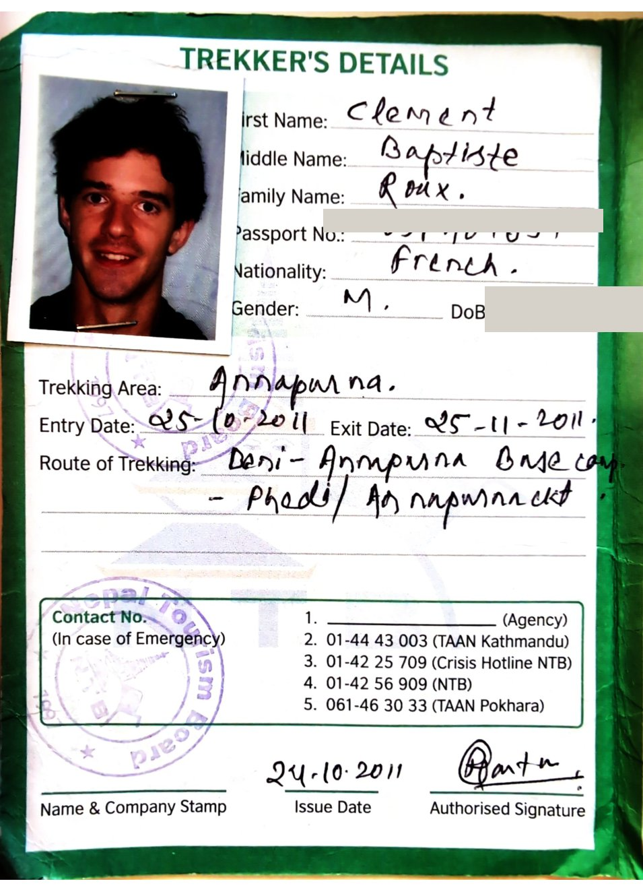
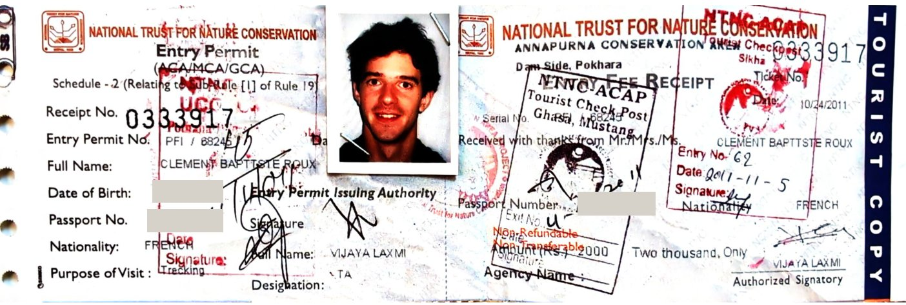
Nous rendons la chambre, et un taxi nous dépose, sacs lourds sur le dos, à la gare routière de Baglung, à Pokhara, d'où partent les bus vers l'ouest. À partir de là, nous ne verrons plus un seul touriste de la journée.
Un dal bhat en attendant le bus de 13 heures. Il est plein, des passagers voyagent sur le toit, mais les sièges sont plutôt confortables. Nous nous enfonçons dans d'immenses vallées vertes, couvertes de jungle, parcourues par un fleuve large et puissant. Le paysage est neuf. Au loin, de gros nuages noirs nous inquiètent ; le beau temps revient, mais le goudron, lui, s'en va pour de bon. Le bus est aussi défoncé que la route, et souvent nous le croyons sur le point de se renverser. Romain et moi parvenons à lire dans les cahots, ce qui tient de la prouesse. Après cinq heures de route et quelque quatre-vingts kilomètres, le soleil couché, nous arrivons à Beni. La ville est bâtie au confluent de la Kali Gandaki et de la Myagdi ; c'est la vallée de la Myagdi que nous allons remonter.
La ville n'est éclairée que par des guirlandes, comme un soir de Noël. Nous partons à la chasse à l'hôtel ; le troisième est le bon. Une famille entière nous accueille, et la chambre coûte 250 roupies.
Les sacs posés, nous flânons dans les rues. L'ambiance est à la fête : nous tombons en plein festival hindou, cinq jours pendant lesquels les enfants dansent en habits traditionnels. C'est Tihar, la fête des lumières, qui dure cette année du 24 au 28 octobre : on allume des lampes partout, et des groupes d'enfants vont de maison en maison chanter et danser.
Les enfants parlent bien anglais et traduisent souvent pour leurs parents ; l'anglais compte beaucoup à l'école, et leur vocabulaire m'étonne.
Au dîner, le grand-père fait la conversation dans un anglais approximatif. Il adore la Belgique et l'économie. Avant la fin du repas, il nous met en garde, lui aussi, contre le Dhaulagiri.
Demain commence officiellement le trek. Nous prendrons sans doute encore un bus, pour éviter un tronçon sans intérêt et profiter des sources chaudes de Tatopani. Le livre commencé hier, un cadeau de Christian, me passionne. Nous dormons à Beni, chez cette famille.
Jour 125 octobre 2011
Les sources chaudes
Beni → Tatopani en bus, puis à pied par Babiyachaur jusqu'à Darbang
- départ à pied 11 h 30 · 3 h 30 de marche
- nuit au lodge, Darbang · 200 Rp
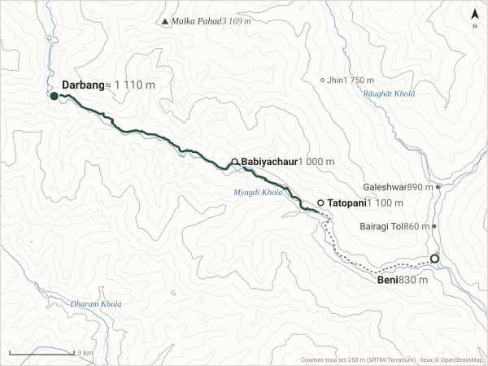
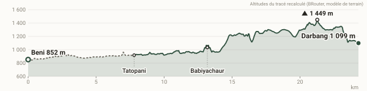
Le 25 au matin, nous quittons Beni en bus. Il nous dépose à Tatopani : deux jours et demi de bus depuis Katmandou, et nous voici au départ. Aux sources, entourés de Népalais, nous nous lavons et faisons la lessive dans une eau à 50 °C. Un moment très agréable.
Nous y croisons un groupe de dix Français et Belges en route pour le Tukuche Peak, un sommet de 6 900 mètres. Le déjeuner se fait dans une petite échoppe dont la vendeuse propose de cuisiner ce que nous lui achetons. Nous acceptons : ce seront des noodles et deux œufs.
À 11 h 30, nous commençons enfin à marcher. Les sacs sont lourds, il fait chaud. Une heure et demie plus tard, à Babiyachaur, une pause thé et samosas nous remet d'aplomb.
Nous décidons de pousser jusqu'à Darbang, deux heures plus loin. Le chemin est large, sec, poussiéreux, et coupé de rivières qu'il faut traverser pieds nus. Seize kilomètres à pied pour ce premier jour.
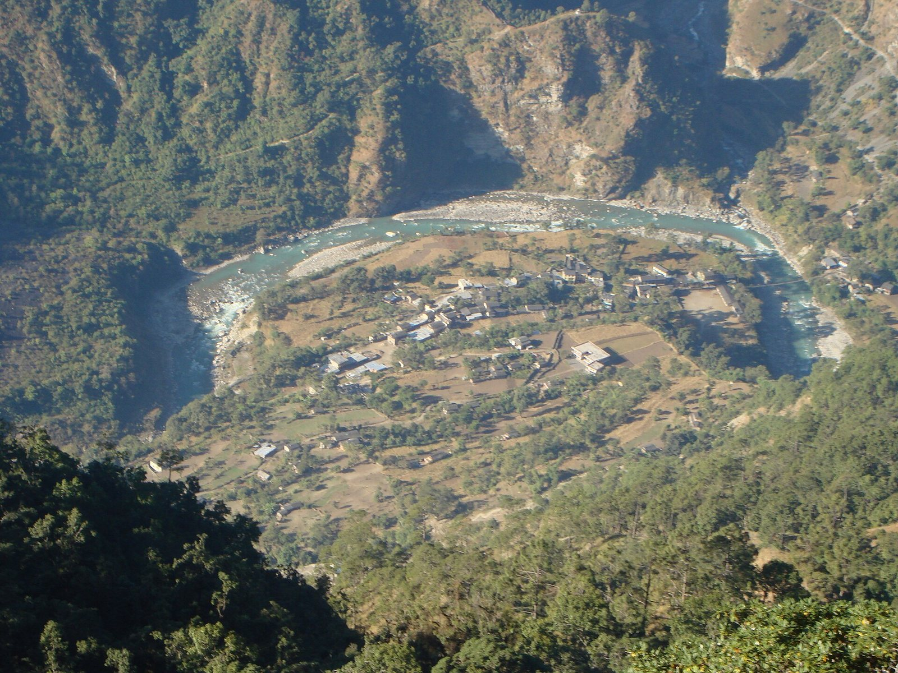

À Darbang, le contrôle des permis passe sans encombre. Une chambre au lodge pour 200 roupies, un dal bhat géant pour 150.
Après le dîner, nous faisons connaissance avec une expédition en route pour le Dhampus Peak : dix Slovaques, vingt-trois porteurs et sans doute quatre guides. Leur chef nous fait comprendre qu'ils auront un jour d'avance sur nous, et qu'ils pourront nous aider en cas de problème. Bonne nouvelle : s'il ne neige pas d'ici là, trente-sept personnes vont tracer devant nous la partie difficile.
Depuis 18 heures, il pleut fort et l'orage tonne. Un petit vent d'inquiétude passe : notre tente est bien simple, et plus haut, sur le glacier, il y aura de la neige.
Demain, lever à 5 heures pour partir tôt, avec du thé et de la tsampa au petit déjeuner. La tsampa, farine d'orge grillée, est la nourriture de base des Tibétains et des montagnards du nord du Népal : c'est désormais la nôtre. Nous dormons au lodge de Darbang.
Jour 226 octobre 2011
La journée des contrastes
Darbang → Dharapani → Muri
- départ 10 h 30 · arrivée 17 h
- nuit chez l'habitant, Muri · 700 Rps avec le dîner
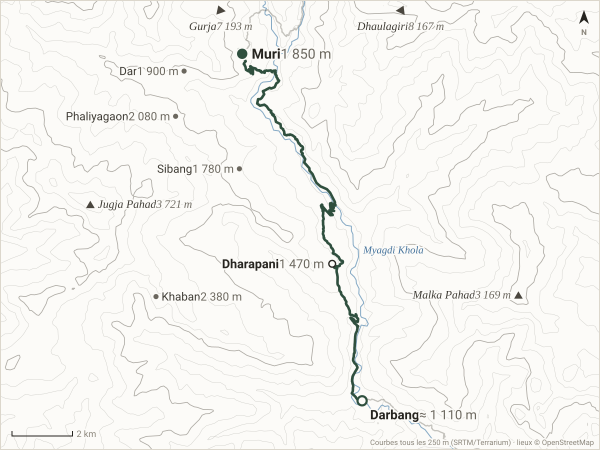
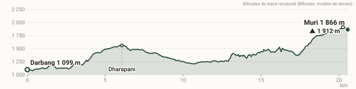
À Darbang, le 26 commence en pleine nuit : des crampes d'estomac me réveillent et ne me laissent plus dormir. À 6 heures, je réveille Romain. Le départ était prévu à 5 heures, mais je ne peux pas partir dans cet état, et de toute façon nous n'avons plus de réveil : Romain a perdu son téléphone.
Une tsampa, un thé : rien n'y fait, je me tords dans tous les sens. La pharmacie du coin est une cabane ; j'y explique mon mal à une femme qui me répond dans un anglais approximatif. Les crampes m'empêchent de marcher et de me tenir droit. J'avale les pilules qu'elle me donne, 40 roupies. Rien ne change, et la panique monte : le temps passe, et il vaudrait mieux avancer.
Il ne reste qu'une solution : aller chercher au fond de la gorge le repas que je ne digère pas. L'heure qui suit est un cauchemar ; rendre le dîner de la veille par-dessus le petit déjeuner n'a rien de simple.
À 10 h 30, enfin, ça va mieux, mais je suis vidé, sans plus aucune énergie. Un Pepsi, un peu de repos, et nous partons vers Dharapani. Après presque dix heures de bataille, je revis, et je savoure chaque seconde : la légère peine de la marche est un bonheur, comparée à l'intoxication.
À midi, nous sommes à Dharapani, un très joli village perché aux maisons ocre rouge. C'est la saison de la récolte : le riz est partout, à tous les stades.
Un chowmein, un thé au lait (milk tea), et nous repartons, avec la crainte d'arriver de nuit à Muri, notre objectif. Le rythme est très bon, il fait chaud ; je marche en collant court de course à pied et chemise de lin. Devant nous, les nuages se forment à mesure que nous avançons, et l'inquiétude nous fait accélérer.
Un poste de contrôle : c'est toujours l'angoisse de ne pas avoir les bons permis, ou de se faire racketter. Le policier nous demande des crayons, que nous lui donnons, puis un Pepsi, que nous esquivons.
Il fait très mauvais vers la vallée du Dhaulagiri, et quelques gouttes tombent. Puis le ciel se dégage : nous avons eu raison de continuer.
Peu avant Muri, nous rencontrons un homme qui se trouve être professeur d'anglais. Il nous guide jusqu'au village, où sans lui nous nous serions trompés de chemin, et nous indique une maison où dormir et manger. Quelle chance de tomber sur quelqu'un qui parle anglais.
Muri est une petite ville très reculée, sans rien pour les touristes. Les maisons sont toutes traditionnelles, les enfants plus sales qu'ailleurs, et plus personne ne parle anglais ; même les enfants y ont bien plus de mal. Avec l'aide de la fille aînée de la maison, nous parvenons tout de même à négocier un peu le dîner et la chambre : 700 roupies.
Arrivés à 17 heures, nous sommes épuisés et affamés. En attendant le dal bhat, que je n'ai pas le choix de refuser malgré ma forte réticence, nous mangeons des noodles. Le dîner est à 18 h 30, dans la pièce voisine de la cuisine, assis en tailleur sur une paillasse, devant les six enfants de la maison. Une vingtaine de kilomètres depuis Darbang, plus de 1 400 mètres de montée.
Dans le carnet, j'appelle ce jour la journée des contrastes. Je me suis réveillé malade, je finis heureux. Il a d'abord fait très mauvais, et le Dhaulagiri nous est apparu dans la lumière du couchant. Nous sommes partis d'une ville qui a encore des hôtels ; nous dormons dans un village où les touristes sont très rares, chez l'habitant, et la cuisine s'y fait au feu de bois.
Le Dhaulagiri, la « montagne blanche » en sanskrit, culmine à 8 167 mètres : c'est le septième sommet du monde. Il n'a été gravi qu'en 1960, le 13 mai, par une expédition suisse, autrichienne et népalaise. Ce soir, nous dormons chez l'habitant, à Muri.
Jour 327 octobre 2011
Le grenier à maïs
Muri → Boghara
- 6 h 30 → 11 h 17
- nuit au grenier, chez l'habitant, Boghara · 2 080 m
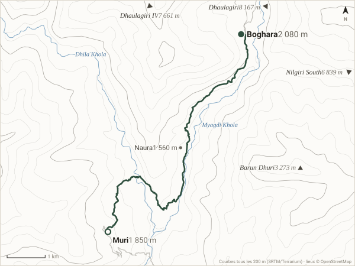
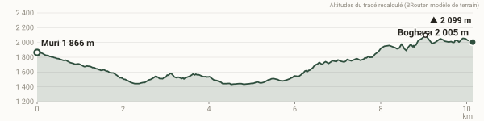
Le 27, à Muri, le réveil est difficile, à 5 h 30. Thé et tsampa, puis départ à 6 h 30. Le ciel est d'un bleu pur : on distingue nettement les Dhaulagiri I, II, III, IV et V.
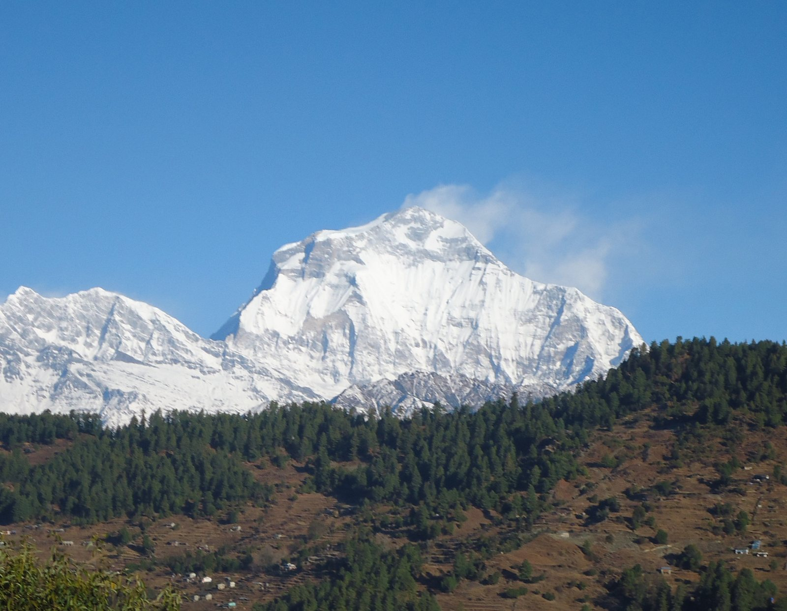

Les villageois, l'un après l'autre, nous remettent sur la route de Boghara ; sans eux, nous nous serions trompés plusieurs fois. La carte est mauvaise et nous joue des tours.
Nous trouvons pourtant la bonne vallée, mais, une fois de plus, la marche est bien plus dure que prévu. La vallée est très encaissée, abrupte, ses deux parois couvertes de forêts denses et de cascades. D'abord la jungle, puis le bord de la rivière, dans une humidité épaisse ; nous sommes à l'ombre depuis le matin, mais il fait bon. Ensuite le chemin s'élève, taillé dans la roche, haut perché, et nous retrouvons vite le soleil et la chaleur. Ce que nous comptions faire en une heure et demie en prend plus du double. La veille pèse encore : nous sommes fatigués, et le moral est bas. Dix kilomètres seulement, mais près de huit cents mètres de montée et presque autant de descente.
À 11 h 17, à l'heure du déjeuner, nous arrivons à Boghara. Nous pensions pousser jusqu'à Dobang ; il est hors de question de repartir. On nous conduit à la première maison du village, où nous demandons des nouilles et un thé. Nous y dormirons.
Après le déjeuner, deux heures de sommeil dans notre chambre, qui est le grenier : des paillasses, et les réserves de maïs pour voisines.
Dans l'après-midi arrive un groupe de trekkeurs, puis un deuxième, puis un troisième, chacun avec ses guides, ses porteurs et ses ânes. Ils sont dix par groupe, et leur campement prend beaucoup de place. Quelle organisation, et quelle autre idée du trek.
En début de soirée, des enfants et quelques adultes s'installent devant la maison. Nous nous asseyons avec eux pour regarder. Ils chantent et dansent ; nous chantons et dansons aussi. Au fil de la soirée arrivent les offrandes, des plateaux de farine de maïs, de pain, d'alcool et de billets. Nous apportons notre part. C'est encore Tihar : pendant ces cinq jours, des groupes vont de maison en maison chanter et danser, et chaque foyer leur donne de quoi manger et un peu d'argent.
On mange, on boit de l'alcool de riz, on fume du tabac. La nuit tombée, la fête s'achève, et l'on nous sert notre dal bhat dans le grenier.
Demain, nous aimerions doubler l'étape pour passer devant les trois groupes, encombrants, mais rassurants pour la suite du tour. Nous dormons au-dessus de la cuisine : on y entend tout, et la fumée du feu de bois monte jusqu'à nous. Pas idéal pour s'endormir.
Jour 428 octobre 2011
La jungle primaire
Boghara → Dobang → Choriban, deux étapes en une
- Dobang à 10 h 40 · 8 h de marche · environ 1 700 m de montée
- nuit dans une cabane, Choriban · 3 400 m
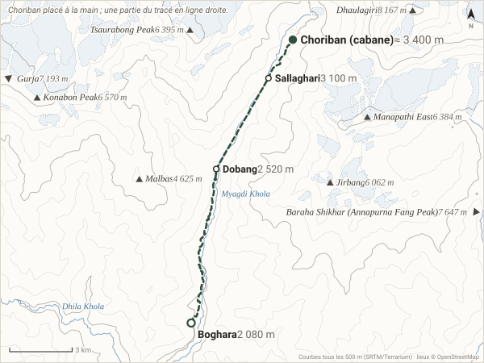
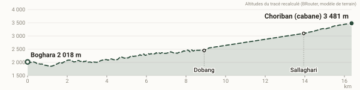
Le 28, lever à 5 heures dans le grenier de Boghara. La frontale, le réchaud, la tasse remplie d'eau, la tsampa. Une heure plus tard, nous quittons notre chambre spartiate.
Un chemin boueux et raide descend dans la forêt. Je donne un rythme lent, pour ne pas nous épuiser trop vite. La forêt devient bientôt une jungle primaire ; le paysage change du tout au tout, c'est magnifique, on se croirait en Amazonie. Le chemin, heureusement, est clair.
Nous marchons longtemps dans la boue, entre les pierres, nous traversons mille ruisseaux, étonnés par tant de lianes, de cris d'oiseaux, d'humidité. Des ponts parfois peu rassurants enjambent d'énormes torrents très raides.
À 10 h 40, le ventre vide, nous arrivons à Dobang, en avance sur les temps habituels malgré notre allure modérée. Un bon chowmein, et nous décidons de repartir pour Choriban, à 11 h 45. Au déjeuner, un sherpa du groupe de Français nous parle d'une option : passer par le sommet du Dhampus Peak, à 6 000 mètres, plutôt que par le col voisin, le Dhampus Pass. L'idée nous attire beaucoup.
De nouveau une allure modérée, et la jungle boueuse qui tapisse la vallée encaissée. Le paysage alterne entre la jungle primaire et de grands torrents aux pierres démesurées. La fatigue commence à se faire sentir.
Pour la première fois, nous croisons des touristes sur le chemin : un couple de Fairbanks, en Alaska, qui a tout l'air de marcheurs et de campeurs aguerris. Les montées sont longues, souvent entièrement boueuses. Nous arrivons enfin au campement.
Nous y sommes seuls, avec une petite cabane pour nous : deux couchages de foin et un feu au centre, sans cheminée, comme toujours au Népal. Bilan : huit heures de marche, environ 1 700 mètres de montée, et deux étapes en une.
Avant le coucher du soleil : l'eau, le feu, des chapatis de tsampa cuite. Nous mangeons peu, il faut économiser. Nous ignorons encore si l'on sert des dal bhat au camp des Italiens, et combien de jours exactement nous passerons sur le glacier avant Marpha, où nous rejoindrons le tour des Annapurnas. Nous avons cinq jours de vivres confortables ; en nous rationnant, sept ou huit.
J'ai mal aux épaules, j'ai encore faim, et je suis heureux. Derrière nous, la jungle et les villages reculés ; devant nous commence la haute montagne. À 18 h 30, nous nous couchons dans la cabane de Choriban.
Jour 529 octobre 2011
Le chasseur
Choriban → camp de base des Italiens
- arrivée 11 h 45 · journée d'acclimatation
- 1re nuit dans notre tente, camp des Italiens · 3 700 m
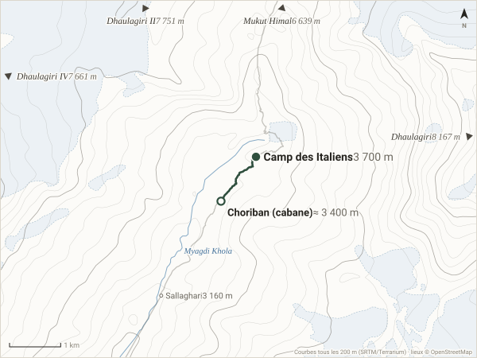
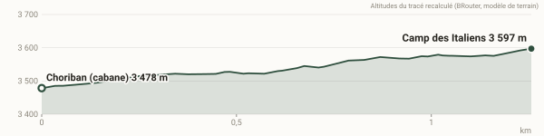
À Choriban, la nuit a été fraîche, entrecoupée de petits réveils : le sol dur, les besoins. Le 29, nous nous levons sans hâte à 6 h 10 ; il fait jour. Un peu de porridge vient égayer la petite boule de tsampa habituelle : ces derniers jours, le régime a été sévère, et le froid comme l'altitude réclament plus d'énergie.
L'étape est courte : elle nous sert de première journée d'acclimatation, que l'on passe d'ordinaire au camp de base des Italiens. Nous manquons pourtant d'énergie, et nous gravissons très lentement, péniblement, les quelque trois cents mètres qui nous en séparent. J'en soupçonne notre état d'esprit d'économie, et le dîner frugal de la veille : des noodles et trois petits bouts de viande séchée.
À 11 h 45, nous arrivons au camp, affamés ; la faim me rend irritable. Nous courons commander un chowmein au dernier refuge du trek. Il coûte 250 roupies, une fortune, mais il faut bien manger à peu près correctement si nous voulons tenir la suite. La petite assiette, très bonne, disparaît sans nous rassasier le moins du monde. Une omelette, le plat le moins cher, ramène la bonne humeur : deux œufs frits, une petite portion, délicieuse.
Je recommence enfin à goûter le moment. Nous sommes à 3 700 mètres, il fait beau, et nous sommes les deux seuls touristes du camp, avec un petit groupe de sherpas et la gardienne du refuge. En face, la face ouest du Dhaulagiri se découvre entièrement.
Nous jouons aux cartes quand un chasseur se met à dépecer un animal de montagne sous nos yeux. Par curiosité, nous lui demandons si nous pouvons en acheter un petit morceau. Pour 150 roupies, nous obtenons une assiette chacun, cuisinée par la gardienne du refuge. Cette viande fraîche, si bien préparée, mangée au soleil avec un peu de piment : un moment inoubliable.
Quel bonheur ! Nos forces retrouvées, nous savourons pleinement ce cinquième jour. L'extra est tel que nous finissons le festin par une cigarette achetée à l'unité au refuge, un luxe dont nous avions vraiment besoin et qui ne se représentera pas de sitôt.
Nous plantons notre tente pour la première fois, et refaisons entièrement les sacs en comptant les vivres et les étapes à venir.
Le groupe de Français croisé aux sources de Tatopani arrive, avec un nombre invraisemblable d'ânes et de guides. Il faut dire qu'ils comptent gravir le Tukuche Peak, ce qui suppose de rester six jours à 5 140 mètres.
Nous, nous cherchons à nous renseigner sur le Dhampus Peak, 6 000 mètres. Il paraît accessible et peu dangereux ; encore faut-il trouver le chemin, et la carte est si mauvaise que nous lui découvrons chaque jour de nouvelles erreurs. Et nous avons pris un jour d'avance sur les expéditions : la nuit d'hier à 3 400 mètres et la petite étape d'aujourd'hui nous tiennent lieu d'acclimatation, quand les autres resteront demain au camp des Italiens.
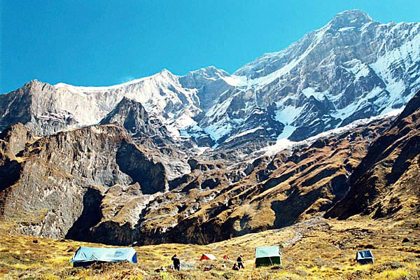

L'après-midi, le ciel se couvre. Dans la tente, chacun dans son sac de couchage : lecture, cartes, journal, sur un fond de petite pluie. Puis une corvée d'eau à la rivière, en contrebas du camp, et le dal bhat à 17 h 30.
Entourés de guides et de Népalais, nous avalons quatre grandes assiettes de riz arrosé de dal, preuve que nous avions faim. Au dessert, du riz saucé au ketchup sucré. L'expédition qui a monté ses tentes près de la nôtre vit tout autrement : elle reste entre soi, avec sa tente cuisine, sa tente salle à manger, et même une tente douche chaude.
La cuisinière est d'une gentillesse et d'une gaieté folles ; nous nous entendons très bien, et elle s'amuse de nous voir manger autant. C'est notre dernier gros repas avant le tour des Annapurnas.
Avec Romain, l'entente est toujours parfaite. Nous parlons peu en marchant, mais nous nous comprenons très bien, et nous semblons vivre les choses de la même manière. Pas de décalage, pour l'instant, dans nos attentes ni dans nos buts. Nous restons simples, souples, attentifs l'un à l'autre.
« Nous avançons dans la même direction avec le même bagage et le même émerveillement. »
L'entente vaut aussi pour la tente : pas un millimètre carré n'y est perdu, mais nous sommes méthodiques tous les deux, et l'espace est occupé au mieux.
Nous parlons de ce que l'on va chercher en montagne. Le trek n'a rien à voir avec la quête d'un sommet ; j'y découvre une autre discipline du corps et de l'esprit. Il apprend à prendre son temps, à ouvrir les yeux et les oreilles, à s'en remettre au milieu que l'on traverse, et à le contempler. Le sommet, que je respecte énormément, tient du dépassement de soi et d'un but précis, ponctuel. Mieux vaut savoir ce que l'on cherche avant de partir : un « summit taker » serait déçu par un trek.
Nous, puisque nous avons le temps, nous allons tenter d'y joindre un sommet, le Dhampus Peak. Et nous cherchons le contraste : après le trek guidé sur les sentiers touristiques, l'autonomie complète sur les chemins que les guides décrivent le moins. Pour l'heure, je me sens libéré de toute émotion destructrice, et j'espère apprendre à mieux les connaître, les comprendre et les maîtriser. Nous dormons sous notre tente, au camp des Italiens.
Jour 630 octobre 2011
Le premier glacier
Camp des Italiens → Glacier Camp
- tout est gelé au départ
- tente, Glacier Camp · 4 100 m
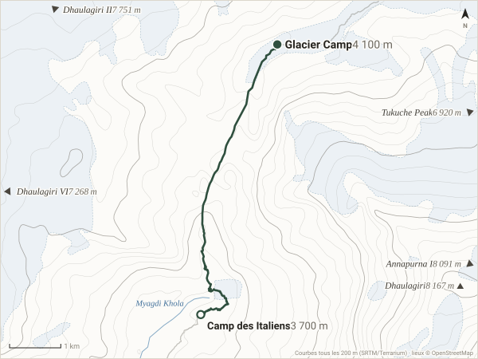
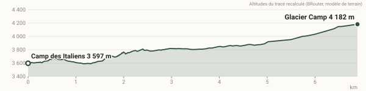
Au camp des Italiens, la nuit a été peu confortable, mais le sac de couchage tient chaud. Le 30, réveil à 5 h 30, et petit déjeuner allongés dans nos duvets pour garder la chaleur : tsampa, et thé mêlé de porridge. Un délice.
Nous nous préparons entièrement avant de sortir, pour n'avoir plus que la tente à ranger. Dehors, tout est gelé, et la lumière du matin sur le Dhaulagiri coupe le souffle. Nous débarrassons la toile de sa fine pellicule de glace et la plions.
Quelques politesses avec les Français, qui passent la journée à s'acclimater ici, et nous partons. La terre est gelée ; gants, bonnets, polaires n'y font rien, impossible de se réchauffer. Seule nous y aide la concentration extrême qu'exige la descente, très raide, dans la moraine.
La montée qui suit est tout aussi acrobatique ; nous la poussons beaucoup trop haut et perdons le chemin. L'idée de désescalader ce couloir de pierres et d'herbes hautes me met mal à l'aise. Nous retrouvons enfin la trace, plus bas, le long de la rivière principale.
Puis des cours d'eau gelés ou à demi gelés, et l'ombre, jusqu'au bout d'une vallée très désertique, de terre orange et de pierres rosées. Enfin nous posons le pied sur un immense glacier couvert de pierres, où s'ouvrent par endroits de larges crevasses et de la glace vive. C'est très impressionnant.
Comme chaque matin, nous sommes les premiers, suivis de près par des sherpas partis en éclaireurs pour l'expédition française. Au Japanese Camp, ou Glacier Camp, nous ne savons plus très bien, à 4 100 mètres, le vent souffle modérément, sans répit. Il n'en faut pas plus pour rendre l'air glacial. L'étape n'a fait que sept kilomètres.
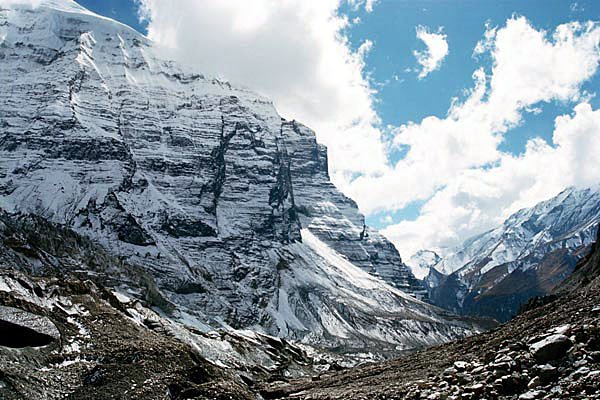

Nous montons la tente et, avant de nous y réfugier, nous en murons les bords de pierres contre les bourrasques de la nuit. L'après-midi se passe sous la toile, avec une seule sortie, pour l'eau, puisée dans une petite rigole de glace vive en contrebas. Lecture, déjeuner, cartes, itinéraire : le temps passe plutôt vite.
À 16 h 30, nous sommes dans nos sacs : il fait très froid. Dîner vers 17 h 45, à la nuit, sans quitter ni les sacs ni la tente. Ce premier dîner du glacier nous ravit tous les deux : un paquet de noodles, dix cuillères de semoule fine, trois petits bouts de viande séchée, un vrai délice. Trois ou quatre fois cette ration ferait un vrai repas ; le poids en a décidé autrement. La nuit sera froide. Toutes nos couches sont prêtes pour demain matin.
Le contraste est étonnant entre le dedans et le dehors. Dedans, un espace minuscule. Il suffit de sortir la tête pour découvrir un immense glacier et des parois verticales de pierre, de neige et de glace. Régulièrement, le bruit très sourd d'une chute de pierres ou de neige rend à la situation sa gravité. Ne jamais oublier que ce milieu est extrêmement dangereux. Dans ces moments-là, je suis content de savoir quelques tentes de gens expérimentés autour de nous. Ce ne sera pas forcément le cas aux prochains camps, dont je redoute vraiment le froid. Nous déciderons le moment venu ; je reste infiniment optimiste.
Nouvelle information sur le Dhampus Peak : il faut un permis à 600 dollars, que nous n'avons pas. Après quelques échanges, la seule solution serait de le gravir de nuit. Nous en parlons, Romain et moi ; la suite dira si nous l'avons fait. Nuit sous la tente, au Glacier Camp.
Jour 731 octobre 2011
La plus mauvaise nuit
Glacier Camp → camp de base du Dhaulagiri
- 6 h 45 → 9 h 45
- tente, camp de base du Dhaulagiri · 4 750 m
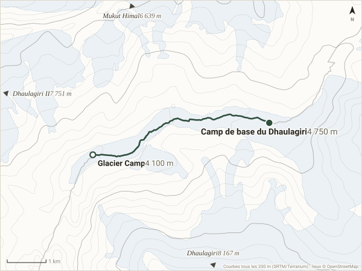
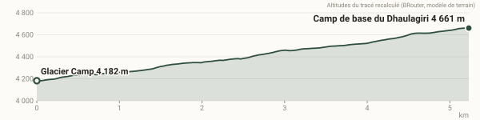
Le 31 octobre, au Glacier Camp, nous sommes vraiment au milieu de nulle part, au bout du monde, dans un milieu particulièrement dangereux, sur un trek particulièrement hostile. L'ambiance est difficile à décrire : seuls dans notre petite tente, sur un glacier couvert d'un centimètre de gravier, entre des parois extrêmement raides, dont la plus haute est la face nord du Dhaulagiri.
Cette nuit a été la pire depuis notre arrivée au Népal, il y a à peine un mois. Le froid de l'air, et surtout celui du sol : nous avions sous-estimé les graviers qui couvrent le glacier. La nuit, ils transmettent tel quel le froid de la glace vive en dessous. On a l'impression de dormir à même les cailloux, et mon tapis de sol premier prix de chez Décathlon n'arrête pas le froid d'un glacier.
À ces réveils s'ajoutent les avalanches, très nettes et très fréquentes, avec leur bruit sourd. La première a été si puissante que je suis resté tétanisé, à l'idée qu'elle atteigne la tente. L'inconfort, le froid, les avalanches, l'étroitesse des duvets, le noir profond : l'angoisse est venue. J'ai imaginé les pires scénarios pour la suite, et je suis entré malgré moi dans un état d'esprit défaitiste. Je me suis finalement endormi, tant bien que mal, jusqu'au petit matin.
À 5 h 30, Romain et moi nous racontons nos nuits ; emmitouflés comme nous l'étions, chacun s'est cru seul au monde. Elles sont identiques en tous points. Cela me réconforte de l'avoir partagée, et de pouvoir en parler. Romain, lui, voit plutôt le bon côté :
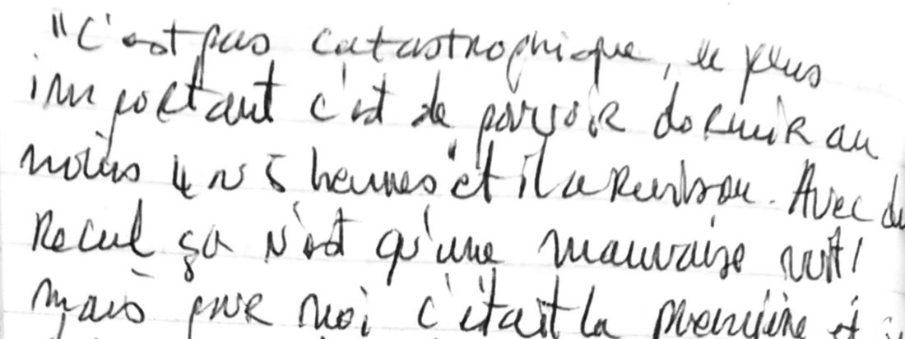
Mais pour moi c'était la première, et la moins haute : il va falloir s'y faire. Je ne cache pas mon inquiétude pour la prochaine, à 4 800 mètres, et plus que jamais sur le glacier, où les sardines n'entrent pas dans la glace : nous les remplaçons par des pierres et des ficelles.
Départ à 6 h 45. La marche est agréable, et nous sommes les tout premiers dans la vallée glacée. À 9 h 45, nous voici au camp de base du Dhaulagiri, par beau temps, face à la paroi nord, au Tukuche et au Sita Chuchura.
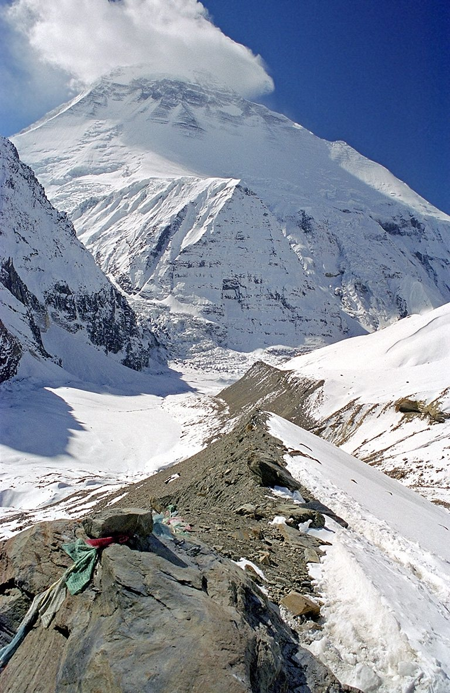

Comme un rituel, nous faisons sécher tente et duvets avant que n'arrivent le vent, la neige et les nuages. Une première popote de noodles au poisson séché, puis la tente, et de petits murets de pierres contre le vent. À midi, nous nous enfermons dans la tente pour fuir le froid ; la vue est bouchée, et de fins flocons de glace tombent.
L'après-midi se passe dedans : le rami, le thé, la tsampa, et l'eau puisée dans une rigole de glace, tout près. Demain et après-demain seront les deux journées les plus importantes et les plus délicates du trek. Nous les appréhendons un peu, mais nous mesurons la chance extraordinaire d'être ici.
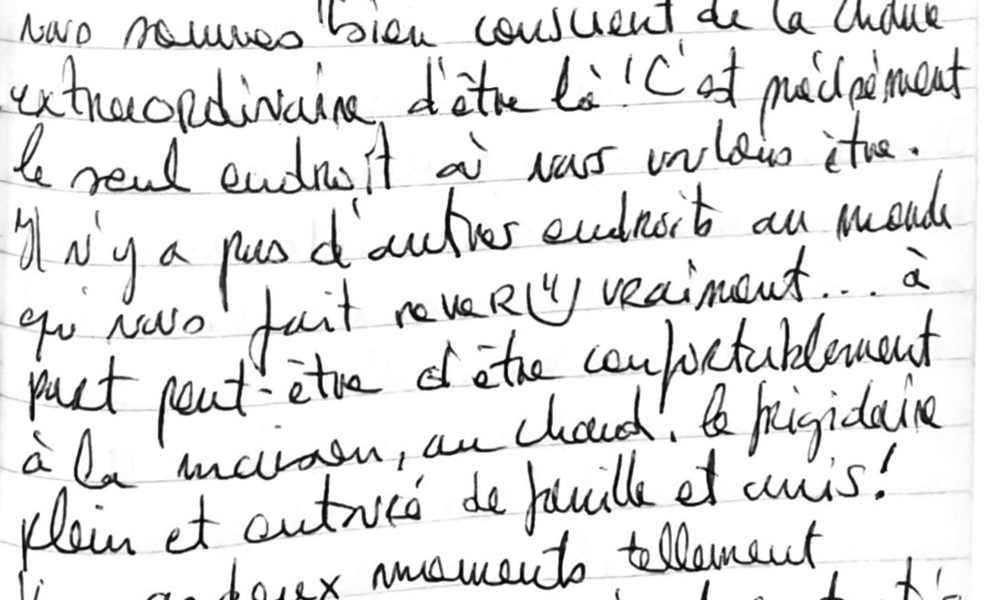
Ces deux bonheurs si opposés, je les vis l'un et l'autre, et cela me rend heureux. Puis j'ai trop froid aux mains pour continuer à écrire.
Au dîner, notre plat favori : noodles, couscous, viande séchée. Au dessert, grand luxe, une petite poignée de granola ; il en faudra pour demain.
Le couple d'Alaska campe à une minute de nous. Ils sont vraiment très gentils : lui enseigne à des enfants de neuf ou dix ans, elle est docteure en biologie et étudie dans une station du Grand Nord. Les gens que l'on rencontre dans ces lieux exigeants, qui nous ressemblent, ont bien plus de chances de nous correspondre.
Dehors, il neige fort et le paysage blanchit. C'est inquiétant. Nous dormons sous la tente, au camp de base. Demain, le French Pass.
Jour 81er novembre 2011
Premiers au French Pass
Camp de base → French Pass, 5 360 m → Hidden Valley
- départ 4 h 30 · 6 h de marche
- −15 à −20 °C sur la crête
- tente, Hidden Valley · 5 100 m
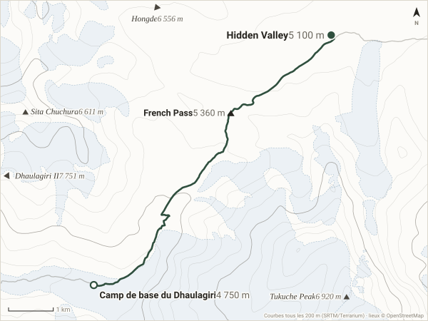
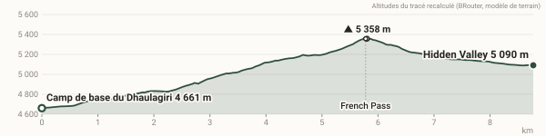
Au camp de base, la neige s'est arrêtée dans la soirée, le temps de couvrir le sol de deux ou trois centimètres. Nous avons étendu polaires et manteaux sur les tapis de sol, pour mieux nous isoler, et dans la tête nous sommes prêts à ce qui nous attend.
Mais je n'arrive pas à dormir : un effet courant de l'altitude, qui me reprend de temps à autre, comme Romain à Lobuche. Réveillé à 22 h 45, je ne retrouve plus le sommeil, bien que réchauffé. J'essaie toutes les techniques que je connais ; l'esprit reste éveillé. L'étape qui vient est importante et fatigante, et ne pas dormir est aussi frustrant qu'énervant.
À 3 heures, nous commençons le petit déjeuner. Il fait très froid. En glissant la tête dehors, je m'émerveille du paysage tout blanc sous une petite lune et un beau ciel étoilé. Petit déjeuner lent, sacs bouclés.
À 4 h 30, il faut sortir plier la tente. La lune s'est couchée, la nuit est noire, et il fait si froid. Le rangement fini, nous mesurons notre solitude : nous étions la seule tente du camp. La neige a effacé le chemin, et l'étape est difficile. Notre plan : rejoindre un camp plus loin, dont nous savons qu'il part à 5 heures pour le French Pass. Nous l'atteignons à grand-peine, dans le noir, sans chemin, sur un glacier heureusement couvert de pierres. Ils se réveillent à peine. Avec le jour qui se lève, nous décidons d'ouvrir la voie nous-mêmes, dans la fine couche de neige qui laisse deviner le sentier.
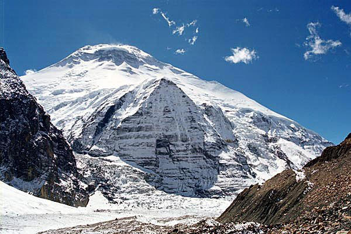

Chaque minute apporte un nouveau jeu de lumière sur les sommets alentour. Le lever du soleil sur le Dhaulagiri restera l'un des moments forts de mes souvenirs. Puis une très longue crête, exposée, réputée pour ses vents glacés : elle tient parole, entre −15 et −20 °C. La bouteille d'eau que je garde contre mon manteau gèle et devient un bloc.

À 5 360 mètres, nous sommes fiers, contents, heureux. Crampons aux pieds, nous descendons vers la Hidden Valley. Ce col et cette vallée tiennent leurs noms de l'expédition française de 1950. Venus chercher une voie vers le Dhaulagiri, Maurice Herzog et ses compagnons ont trouvé là une vallée absente de leurs cartes, qu'ils ont appelée la « vallée cachée » ; Lionel Terray et Jacques Oudot ont atteint le col au-delà. Le Dhaulagiri leur a paru impossible, et ils se sont tournés vers l'Annapurna, premier sommet de plus de 8 000 mètres jamais gravi, le 3 juin 1950.
C'est un haut plateau, où s'installe le camp de base du Tukuche, une très belle pente que prolonge une crête de neige. C'est ici, en 1960, que l'avion de l'expédition qui allait réussir le Dhaulagiri, un prototype de Pilatus Porter, s'est écrasé au décollage ; il y a été abandonné.
Je suis fatigué. Six heures de marche en tout, sans jamais nous réchauffer, alors que nous portons toutes nos couches à la fois. L'altitude se fait sentir, les jambes sont lourdes.
Une seule idée en tête pourtant : repérer le Dhampus Peak. C'est une pente raide, enneigée, criblée de crevasses. Nous ne perdons pas espoir : il s'agit de retrouver toutes les expéditions croisées depuis le début du trek, et de négocier avec l'une d'elles un aller-retour au sommet. L'ascension de nuit, elle, est impensable, suicidaire : le glacier, le noir, le froid.
Deux Autrichiens très sympathiques nous laissent espérer de nous joindre légalement à leur ascension. Nous courons demander l'accord de leur sherpa. Il nous explique que le sommet est technique : il faut corde, baudrier, piolet, crampons, chaussures. Nous n'avons rien de tout cela ; nous comprenons très bien son refus, et l'approuvons.
Je suis extrêmement déçu : l'ascension faisait partie de mes objectifs, et j'ai le sentiment de manquer quelque chose. Mais nous avons tout tenté, je n'ai aucun regret. Il est tout de même frustrant, en trek, de convoiter tant de sommets sans en gravir un seul. Le désir d'ascension n'en grandit que davantage.
Nous avons vu, en revanche, un nombre incroyable de vallées et de paysages. Le trek est bien plus riche, culturellement et géographiquement, que l'ascension d'un sommet, et c'était là, au départ, le but de ce voyage de fin d'études : s'ouvrir l'esprit, apprendre des autres et de soi-même.
Le soir, dans le carnet, je tiens les comptes de nos deux treks :
« 11 nuits passées à + 4000 m
5 nuits + 4000 m et sous tente
2 nuits + 5000 m et sous tente
3 “pass” (2× 5300 m et 1× 5200)
5545 m point culminant
6 jours d'autonomie complète sur les étapes les plus exigeantes passées au Népal et les moins renseignées dans les guides sur le trek le plus exigeant. »
Cette journée compte plus que les autres : la plus belle, la plus haute, la plus technique, la plus fatigante. Sans doute l'étape clé du trek. Mais chaque étape, au fond, a été extraordinaire, et nous a apporté beaucoup de nouveau.
Demain, une étape usante, exposée au vent, entamera la descente vers des altitudes plus clémentes. Je serai content de retrouver la chaleur dans deux jours. C'est éreintant de lutter sans cesse contre le froid, le vent, l'altitude, le poids du sac, la fatigue, la faim. Plus bas, il y aura plus de confort et de chaleur. Nous en avons besoin. Nous dormons sous la tente, dans la Hidden Valley.
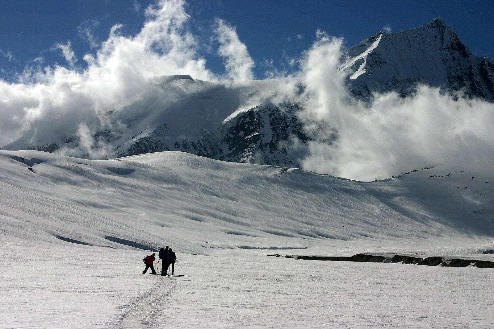

Jour 92 novembre 2011
Le vent du Dhampus Pass
Hidden Valley → Dhampus Pass, 5 240 m → Yak Kharka → Marpha
- 7 h 30 → 15 h · deux étapes en une
- −15 °C dans la tempête
- nuit au lodge, Marpha · 2 670 m
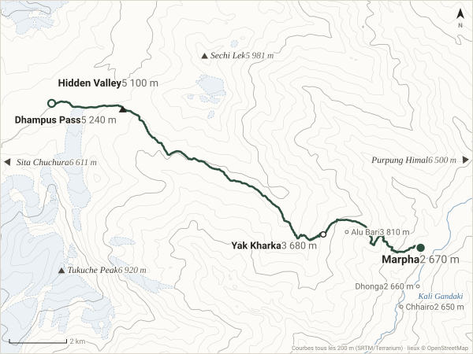
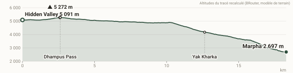
La nuit à 5 140 mètres, dans la Hidden Valley, a été la plus froide de ma vie. La tente était posée sur de l'herbe, mais les vents d'altitude ont fait tomber la température jusqu'à la limite de nos duvets. En polaire, collant et chaussettes, j'ai eu froid. Et, obligés de nous enfermer tout entiers dans le sac, nous avons souffert d'une sorte de claustrophobie, faute d'oxygène.
Le 2 novembre, levés à 5 h 30, nous mettons longtemps à nous réchauffer. Deux heures et un petit déjeuner copieux et chaud plus tard, nous sortons de la tente dans les premiers rayons du soleil. Tout est gelé, le rangement est laborieux.
À 7 h 30, le soleil dans la figure, nous attaquons la pente de neige qui mène au Dhampus Pass, à 5 240 mètres. Nous croyions l'étape sans intérêt ; très vite, la beauté de paysages encore neufs nous surprend, et la progression dans la neige fraîche rend la marche distrayante.
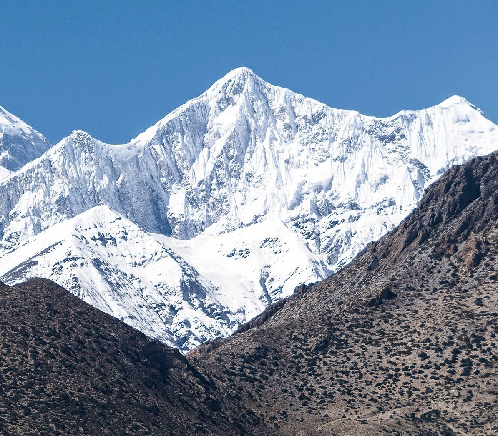

Au camp de base du Dhampus Peak, une expédition allemande nous confirme que l'ascension est technique, et particulièrement difficile cette année. Comme tout le monde, ils s'étonnent de nous voir à deux, sans guide ni porteur, avec un sac raisonnable.
Nous descendons ensuite de larges flancs enneigés, où un faux pas nous ferait glisser très bas. Vigilants, nous avançons, avec un nouveau panorama, la chaîne des Annapurnas, et toujours l'impressionnant Tukuche sur notre droite.
Après trois heures de marche rapide, qui nous ont déjà fait doubler les expéditions parties tôt, nous faisons une pause granola et « lone star ». Suit une tempête de vent, soudaine, qui fait tomber la température à −15 °C au moins. Frigorifiés, couverts de glace, nous devons descendre au plus vite une pente raide et glissante.
À midi, Yak Kharka. Le camp est désert, très inhospitalier, au-dessus d'une vallée morte, livrée aux vents glacés. La décision ne coûte rien : nous doublons l'étape et descendons jusqu'à Marpha.
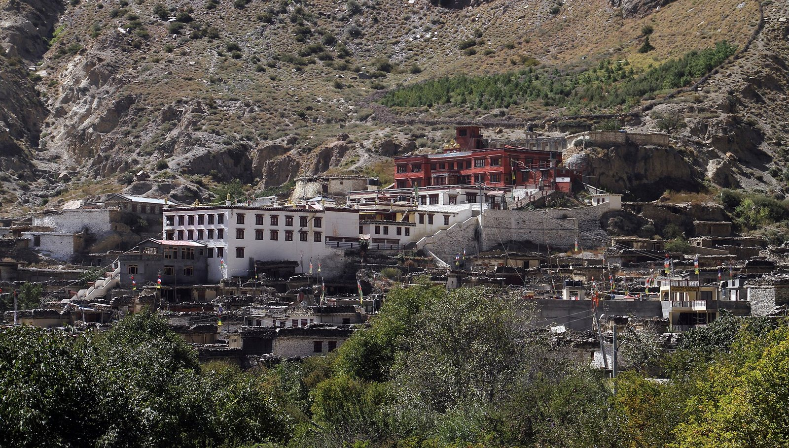

Déjeuner dans une grande étable vide, à l'abri du vent, avec le peu d'eau qui n'a pas gelé. Puis toute la vallée à descendre, et à 15 heures, Marpha, étape du tour des Annapurnas. Dix-huit kilomètres dans la journée, et plus de 2 500 mètres de descente.
Nous avons ramené à une seule journée les deux jours de descente habituels. Le tour du Dhaulagiri s'achève ici, dans un bourg du tour des Annapurnas. Marpha est un village thakali de la vallée de la Kali Gandaki, au pied d'un monastère ; on l'appelle la capitale de la pomme du Népal, et l'on y tire des fruits de l'eau-de-vie et des confitures.
Nous retrouvons la civilisation, l'oxygène et la chaleur : Marpha n'est qu'à 2 600 mètres. Quel bonheur : un lit dans un lodge, un thé au lait (milk tea), une tarte aux pommes, qui fait la réputation du village. Puis la première douche du tour, et l'électricité pour recharger l'appareil photo.
La fatigue est là, mais le confort d'un bourg nous réjouit. Nous fêtons notre réussite à la népalaise, avec une tasse d'alcool de pomme local allongé d'eau chaude sucrée, et des chips de lentilles. Le dîner, dans un petit restaurant sans apprêt : une soupe à l'ail et un chapati farci (stuff chapati). Nous sommes comblés d'avoir si bien bouclé le tour du Dhaulagiri.
« C'était contrasté, exigeant et formateur ! Quelle belle expérience. »
Nous sommes le 2 novembre : il y a un mois, jour pour jour, que nous sommes au Népal. Le plan recopié à Katmandou comptait quatorze étapes jusqu'à Jomsom ; nous voici à Marpha au soir du dixième jour, en comptant celui du bus.
Le soir, je fais le point. Il y a eu d'abord le trek de Gokyo, du Cho La et du Kala Patthar, ma première expérience du trek, du Népal et de l'altitude : touristique, mais riche de panoramas incroyables et de quelques chemins moins courus. De retour à Katmandou, nous voulions une autre région, plus authentique, sans trace du tourisme, et des conditions exigeantes, en autonomie. Le tour du Dhaulagiri y répondait parfaitement ; nous nous y sommes lancés, et le contraste recherché a été au rendez-vous.
Nous allons maintenant suivre la fin du tour des Annapurnas, sans vouloir le boucler : il est beaucoup trop touristique. Les montagnes y sont les mêmes, mais le trek est dénaturé, les vallées entièrement humanisées, quand elles sont restées vierges autour du Dhaulagiri. Ensuite viendra le sanctuaire, qui s'enfonce dans le massif jusqu'aux camps de base du Machapuchare et de l'Annapurna I. Nous l'espérons encore préservé.
Une chose est sûre : nous sommes des touristes responsables, qui n'encouragent en rien le tourisme destructeur. Nous ne consommons que des produits locaux, et nous ignorons les réseaux, les organisations et les constructions conçus pour les touristes casaniers. Cette nuit, nous dormons dans un lit, au lodge de Marpha. Demain, nous descendrons la vallée de la Kali Gandaki.
Ce chapitre est tiré du carnet 2 et du carnet 1.